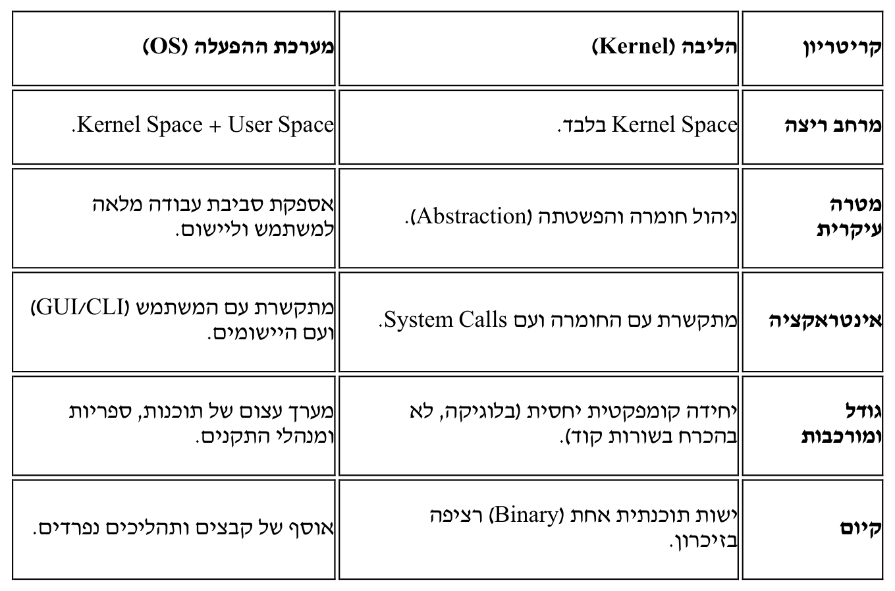
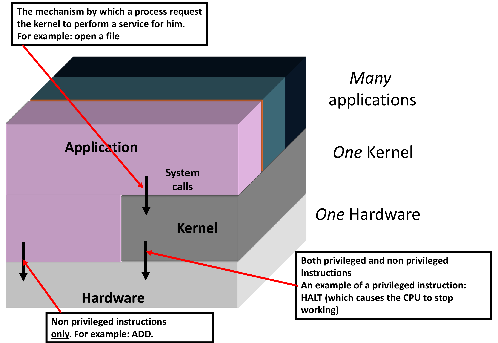
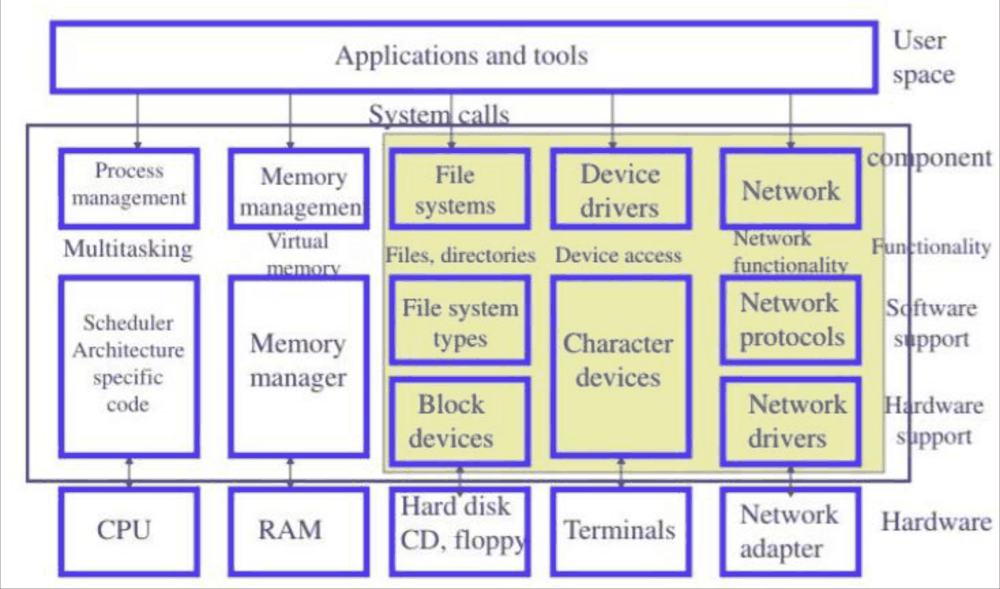
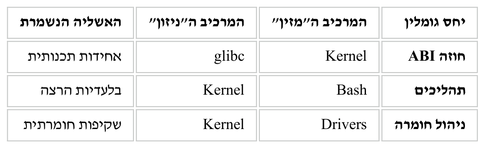
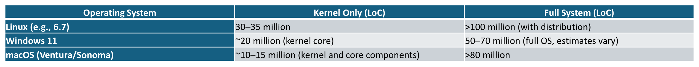
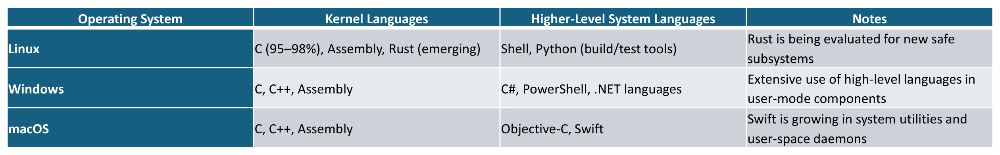

מבוא — מהי מערכת הפעלה ומהו הקרנל
⏱ זמן משוער: 40 דק'
0. האינטואיציה — האשליה הגדולה של המחשב
לפני שכותבים שורת קוד אחת של תכנות מערכות, כדאי לעצור על שאלה שנשמעת טריוויאלית: מהי בעצם מערכת הפעלה? התשובה של הקורס מתחילה מאבחנה לא נעימה על החומרה: החומרה הפיזית היא מורכבת, מוגבלת, ואינה סלחנית. המעבד מבין רק פקודות מכונה, הדיסק מבין רק סקטורים ומגנטים, והזיכרון הפיזי מקוטע ומשותף. בלי שכבה שמתווכת בין המציאות הזו לבין המתכנת — החומרה המשוכללת ביותר נותרת אוסף של רכיבים חסרי תועלת שאינם ניתנים לניהול ברמת הקוד.
מערכת ההפעלה היא האמצעי ליצירת אשליה עבור המתכנת והמשתמש: אשליה של מכונה ידידותית, יציבה ובלעדית. היא מפשטת את המציאות הפיזית ומעמידה לרשות התוכנה משאבים וירטואליים רציפים ובלתי-מוגבלים לוגית. את האשליה הזו המרצה מכנה "המכונה המורחבת" (Extended Machine) — והיא תשמש ציר מרכזי לאורך כל הקורס.
ובתוך התמונה הזו, נקודת מבט אחת פשוטה שכדאי לאמץ כבר עכשיו: התוכנה במערכת המחשב מתחלקת בדיוק לשניים —
- תוכנת (קוד) הגרעין — ה-Kernel.
- כל "שאר" התוכנה — כל שאר התוכניות, הספריות וכו'.
כל השיעור הזה עוסק בשאלה איפה בדיוק עובר הקו בין השניים, ולמה ההבחנה הזו היא לא סמנטיקה — היא נאכפת פיזית על ידי המעבד. נקודת הייחוס של הקורס: Linux Kernel 6.14.
מקור: ch01.pdf (עמ' 5), apps-kernel.pdf (עמ' 2)
1. OS מול Kernel — ההבחנה הסמנטית
האם "מערכת הפעלה" ו"קרנל" הם אותו דבר? לא. אלו מושגים שונים מהותית, אך קיימת ביניהם זיקה היררכית ופונקציונלית הדוקה. הבלבול בספרות נובע משלוש סיבות עיקריות:
- שימוש בחלק לתיאור השלם: לעיתים קרובות משתמשים בחלק (ה-Kernel) כדי לתאר את השלם (ה-OS), שכן הליבה היא המרכיב העיקרי של מערכת ההפעלה. ללא ליבה — אין מערכת הפעלה; אך ללא כלי עזר (Utilities), המערכת אינה שימושית למשתמש הקצה.
- מיקרו-ליבה מול מונוליט: בארכיטקטורות מונוליתיות (כמו Linux) הגבול בין שירותי המערכת לליבה מטושטש פיזית, מה שמעודד שימוש חופשי במונחים. במיקרו-ליבות (כמו L4 או QNX) ההפרדה חדה וברורה, והשימוש המעורב במושגים נחשב לשגיאה גסה.
- ההיבט המסחרי: חברות כמו מיקרוסופט או אפל משווקות "Operating Systems" (Windows 11, macOS) הכוללות דפדפנים, נגני מדיה וממשקים גרפיים. עבורן, ה-OS היא ה-Product. עבור מהנדס המערכת, ה-OS היא ה-Environment.
1.1 ההגדרות האופרטיביות
מערכת ההפעלה (Operating System): אקו-סיסטם תוכנתי מקיף המהווה שכבת תיווך (Abstraction layer) בין החומרה למשתמש/ליישום. היא מוגדרת כאוסף של רכיבים הכולל:
- הליבה (Kernel).
- ספריות מערכת (System Libraries): כגון libc או ה-Win32 API — קוד מוכן שכל התוכניות משתמשות בו במקום לפנות לגרעין בעצמן.
- כלי שירות ותוכניות מערכת (System Utilities): Shells (המפרש שמריץ את הפקודות שאתם מקלידים), מנהלי קבצים, וקומפיילרים (תוכניות שמתרגמות קוד מקור לקובץ הרצה) — כולם מגיעים כחלק מההפצה.
- ממשקי משתמש (User Interfaces): GUI (ממשק גרפי) או CLI (שורת פקודה).
הליבה (Kernel): המרכיב המרכזי והחיוני ביותר במערכת ההפעלה. זוהי התוכנית הראשונה הנטענת לזיכרון (לאחר ה-Bootloader) והיא פועלת ברמת ההרשאות הגבוהה ביותר של החומרה (Kernel Mode / Ring 0). תפקידה המזוקק: ניהול משאבים (Resource Management) וגישור (Mediation) — היא האחראית הבלעדית על ניהול ה-CPU, הזיכרון הפיזי, והגישה להתקני הקלט/פלט.
ניסוח משלים שהמרצה נותן לאותה הבחנה: הליבה היא הישות הסטטית היחידה שרצה בתוך Privileged Mode, בעוד שמערכת ההפעלה היא ישות דינמית המשתרעת על פני שני מרחבי כתובות (Address Spaces). מן הכיוון ההפוך, ה-OS המודרנית היא למעשה Framework: היא כוללת את הספריות שבלעדיהן הקרנל אינו נגיש למפתח הממוצע — ובדיוק את זה מדגימה השרשרת בסעיף 2.
1.2 טבלת ההשוואה
זו הטבלה שהמרצה נותן בחוברת — חמש שורות שמזקקות את כל ההבחנה:

שתי הערות פענוח לטבלה: בשורה האחרונה, Binary = קובץ הרצה מהודר אחד — כלומר הקרנל הוא ישות תוכנתית אחת רציפה בזיכרון, ולא אוסף קבצים; ובשורה הראשונה, Kernel Space ו-User Space הם חלוקה של מרחב הכתובות עצמו — נפרק אותה לגורמים בסעיף 5.
1.3 עוד שתי נגזרות של ההבחנה
- קריסות: אם רכיב ב-OS קורס — המערכת עשויה לשרוד. אם ה-Kernel קורס — מתרחש Fatal System Error (BSOD ב-Windows או Kernel Panic בלינוקס).
- מרחבי כתובות: הליבה ממופה לתוך מרחב הכתובות של כל תהליך במערכת (בדרך כלל בחלקו העליון של הזיכרון הווירטואלי), אך הגישה אליה חסומה ברמת החומרה עבור קוד המשתמש. מערכת ההפעלה, כיישות רחבה, מורכבת ממאות מרחבי כתובות נפרדים (תהליכי שירות) המתקשרים ביניהם באמצעות IPC — תקשורת בין תהליכים (נושא של יחידה 5).
מקור: ch01.pdf (עמ' 1–4)
2. הדוגמה שסוגרת את הפער — מה קורה כשקוראים ל-open()
ההבחנה מהסעיף הקודם נשמעת מופשטת, אז המרצה מוריד אותה מיד לקרקע בדוגמה אחת. נניח שכתבתם בתוכנית C את השורה fd = open("file.txt", O_RDONLY); — פתיחת קובץ לקריאה. מי בדיוק מטפל בבקשה?
הקוד שלך ב-C
פונקציה של ה-OS
הוראת מעבד
בדיקת הרשאות, גישה לדיסק
חזרה דרך glibc לתוכנית
- אתם קוראים לפונקציה ששייכת ל-OS — ספריית glibc. עדיין לא עזבנו את מצב משתמש.
- ה-glibc מבצעת את הוראת המעבד SYSCALL — הרגע שבו הבקשה חוצה את הגבול.
- באותו רגע, ה-Kernel משתלט על המעבד, עובר ל-Ring 0, בודק הרשאות קבצים, וניגש פיזית לדיסק.
- התוצאה חוזרת ל-glibc, והיא מחזירה אותה לתוכנית שלכם — שממשיכה לרוץ במצב משתמש.
אותו עיקרון בדיוק חל גם על printf(): הקרנל של לינוקס מספק את קריאת המערכת write(), אך ה-OS היא שמספקת את ה-Standard C Library (libc) שמאפשרת להשתמש ב-printf(). אותה שורת קוד עוברת דרך שני העולמות — וזה ההבדל שקריטי להבנת שרשרת הקריאות במערכת. את המכניקה המלאה שלה (פסיקות תוכנה, wrapper routines, טיפול בפסיקות) נלמד לעומק במודול קריאות המערכת.
מקור: ch01.pdf (עמ' 3–4)
3. מודל השכבות — אפליקציות ⇄ קרנל ⇄ חומרה
המצגת של המרצה בנויה סביב תרשים אחד שחוזר שקף אחרי שקף, ובכל פעם מקבל רובד הסבר נוסף. זהו התרשים החשוב ביותר של השיעור, ושווה לדעת לצייר אותו בעל-פה:

שימו לב לשלושת החיצים — לכל אחד משמעות שונה לחלוטין, ולשלוש תיבות ההסבר (באדום) שהמרצה צירף לכל חץ.
שלוש התוויות שמימין לתרשים הן חלק מהמסר, לא קישוט: Many applications, One Kernel, One Hardware — במחשב רצות הרבה אפליקציות, אבל יש בו גרעין אחד בלבד וחומרה אחת. הגרעין הוא נקודת המפגש היחידה של כולן, וזו הסיבה שהוא חייב להיות גם המגשר וגם השוטר.
שלושת החיצים בתרשים:
- אפליקציה ← קרנל (System calls): המנגנון שבו תהליך מבקש מהגרעין לבצע שירות עבורו. לדוגמה: פתיחת קובץ — בדיוק השרשרת מסעיף 2.
- קרנל ← חומרה: הגרעין מריץ על המעבד גם הוראות מיוחסות וגם לא מיוחסות. דוגמה להוראה מיוחסת: HALT — הוראה שגורמת ל-CPU להפסיק לעבוד.
- אפליקציה ← חומרה (ישירות!): האפליקציה מריצה הוראות ישירות על המעבד — אבל הוראות לא מיוחסות בלבד. לדוגמה: ADD. זו נקודה שמפתיעה רבים: קוד המשתמש אינו "מדבר" עם הקרנל בכל פעולה — חישוב רגיל רץ ישירות על המעבד, והקרנל נכנס לתמונה רק כשמבקשים ממנו שירות (החץ הראשון) או כשמתרחשת פסיקה.
3.1 מי קבע את הכללים? מתכנני החומרה
הגבולות האלה אינם המצאה של לינוקס — הם מתוכננים ברמת החומרה. מתכנני ארכיטקטורת החומרה מתכננים את:
- מאפייני קבוצת ההוראות של המעבד — ה-ISA של המעבד (רשימת כל ההוראות שהמעבד יודע לבצע);
- מצבי הריצה (privileged levels);
- מנגנון הפסיקות הנתמך (ממומש) על ידי המעבד.
כחלק מתכנון ה-ISA, מתכנני הארכיטקטורה "מחלקים" את כלל ההוראות לשתי קבוצות: הוראות מיוחסות (privileged) והוראות לא מיוחסות (non-privileged). וכחלק מתכנון מצבי הריצה, הם מגדירים לפחות שני מצבים: מצב גרעין (kernel mode) — מצב הרשאה גבוהה, ומצב משתמש (user mode) — מצב הרשאה נמוכה.
3.2 מה קורה בשלב פענוח ההוראה (Instruction Decode)
המעבד ממומש כך שההחלטה אם לבצע הוראה מתקבלת בשלב פענוח קוד ההוראה (Instruction Decode, ובקיצור: ID):
| מה זוהה בשלב ה-ID | מצב המעבד | התוצאה |
|---|---|---|
| הוראה לא מיוחסת | מצב גרעין או מצב משתמש | המעבד ישלים את הביצוע |
| הוראה מיוחסת | מצב גרעין | המעבד ישלים את הביצוע |
| הוראה מיוחסת | מצב משתמש | המעבד לא ישלים את הביצוע ("יסרב לבצע אותה") וייצור פסיקה (Interrupt) — והטיפול בה יוביל להפסקה מיידית של התהליך שהקוד שלו כלל את ההוראה המיוחסת |
כלומר: תהליך משתמש שמנסה "להתחכם" ולשלב HALT בקוד שלו לא יקבל הודעת שגיאה מנומסת — המעבד עצמו יסרב, תיווצר פסיקה, והתהליך ייעצר מיידית. זו האכיפה החומרתית של הגבול בין שני העולמות.
מקור: apps-kernel.pdf (עמ' 1–6)
4. Extended Machine — הקרנל כמפעל של אשליות
הספרות האקדמית נוטה להגדיר קרנל דרך "תפקידים" (Resource Manager, Abstraction Layer, Scheduler). הבעיה, לפי המרצה, היא שזו "רשימת מכולת". במקום זה, הקורס משתמש ב-Extended Machine כציר מרכזי — וזה הופך את הדיון מ"מה הליבה עושה" ל"איזו אשליה הליבה בונה". אם המעבד מבין רק פקודות מכונה — הליבה "ממציאה" עבור המשתמש את המושג "תהליך". אם הדיסק מבין רק סקטורים — הליבה "ממציאה" את המושג "קובץ".
כך נראים חמשת תפקידי הקרנל כשכל אחד מהם מקושר לאשליה שהוא בונה:
| תת-מערכת | התפקיד הטכני | האשליה שהיא בונה |
|---|---|---|
| מנהל התהליכים (Scheduler) | ניהול ה-Context, Context Switching ותזמון (Scheduling) | אשליית הבלעדיות — כל תוכנית "חושבת" שהיא רצה על מעבד משלה, רצוף ובלי הפרעות, למרות שהיא חולקת אותו עם מאות תהליכים |
| מנהל הזיכרון (Memory Manager) | Paging, Page Tables, הקצאת זיכרון ו-Virtual Address Space | אשליית המרחב הרציף והבלעדי — מרחב כתובות וירטואלי רציף, שבו התוכנית כותבת בלי לחשוש שתדרוס תהליך אחר, מעל זיכרון פיזי מקוטע ומשותף |
| מנהל התקני הקלט/פלט (Device Management) | ניהול דרייברים, Interrupt Handling, MMIO/DMA | אשליית השקיפות — חומרה רועשת ולא אחידה מוסתרת מאחורי ממשקים פשוטים (כמו File Descriptors); המשתמש "כותב לקובץ" בלי לדעת איך הבקר מדבר עם החומרה |
| מערכת הקבצים (File System) | ניהול היררכיית קבצים, הרשאות, עמידות נתונים (Persistence) | אשליית העמידות והארגון — "עץ היררכי" נוח לוגית מעל דיסק שהוא סדרה ארוכה של בלוקים; הנתונים "נשמרים" מסודרים גם כשהחשמל כבוי |
| מערך ההגנה והבידוד (Security & Protection) | הגדרת Privilege Levels (Ring 0/3), ניהול הרשאות, Sandboxing | אשליית היציבות והאמינות — הבידוד מבטיח שתוכנית שקורסת לא "תהרוס את המחשב"; בלעדיו האשליה כולה מתנפצת |
וכך נראות תת-המערכות האלה כשמציירים אותן זו לצד זו: למעלה האפליקציות (User space), מתחתן קו הגבול של קריאות המערכת, בתוך הקרנל חמש העמודות (ניהול תהליכים, ניהול זיכרון, מערכות קבצים, מנהלי התקנים ורשת) — וכל עמודה יורדת עד לחומרה שהיא מנהלת:

כל תיבה בתרשים היא נושא שלם בקורס: לתרשים הזה נחזור במודול הבא, ואת העמודות עצמן נפרק במודולים שאחריו — מערכת הקבצים וניהול התהליכים.
4.1 הקשר הסימביוטי באקו-סיסטם
הרכיבים השונים — הקרנל, ספריות הבסיס (glibc), ה-Bash ותוכניות השירות — אינם ישויות עצמאיות. הם מקיימים קשר סימביוטי הדוק:
- הקרנל מספק את התשתית הפיזית והבידוד.
- ה-glibc מתרגמת את בקשות המשתמש לממשק המובן לקרנל (ABI — "חוזה" ברמת הבינארי: אילו אוגרים נושאים אילו ערכים בכניסה לקרנל): היא "עוטפת" את ה-Syscalls המורכבים והבלתי-נוחים (שדורשים העברת אוגרים מדויקת) בתוך פונקציות C ידידותיות. ללא ה-glibc, המכונה האבסטרקטית הייתה "קשה מדי" לשימוש; ללא הקרנל, ה-glibc הייתה רק אוסף של פקודות ריקות.
- ה-Bash (המפרש שמקבל את הפקודות שאתם מקלידים) הוא "הסוכן המבצע של האשליה": המשתמש מזין string (פקודה), וה-Bash מבצע fork() ו-execve() — קריאות מערכת שמפעילות את מנהל התהליכים בקרנל. ה-Bash זקוק לקרנל כדי "לגדול", והקרנל זקוק ל-Bash כדי לקבל הוראות משתמש.
- הדרייברים (חלק מהקרנל) תלויים ב-Interrupt Controller החומרתי כדי לדעת מתי הגיעו נתונים מהעולם החיצון, ומתרגמים חומרה פיזית לאובייקט לוגי שהמכונה האבסטרקטית מציגה למשתמש.
קריסה או חוסר התאמה באחד מהמרכיבים הללו משביתה את ה-Ecosystem כולו. טבלת המבנה הסימביוטי מהחוברת:

שימו לב שכיוון ה"הזנה" מתהפך משורה לשורה: הקרנל מזין את ה-glibc בחוזה ה-ABI, אבל דווקא ה-Bash הוא שמזין את הקרנל בעבודה (תהליכים חדשים) — סימביוזה, לא היררכיה חד-כיוונית.
מקור: ch01.pdf (עמ' 5–8), Kernel-SDLC.pdf (עמ' 37)
5. Ring 0/3, CPL ומרחבי הזיכרון
כדי שהמכונה המורחבת תפעל, החומרה חייבת לאכוף גבולות. ב-x86_64, גבולות אלו ממומשים באמצעות מצבי המעבד (CPU Modes):
- מצב המעבד (CPL — Current Privilege Level): המעבד מנהל אוגר פנימי (חלק מה-CS Segment Selector) המגדיר את רמת ההרשאה הנוכחית. Ring 0 — המצב הפריבילגי הגבוה ביותר, בו רץ הקרנל (CPL=0); Ring 3 — המצב המוגבל, בו רצים יישומי המשתמש. שאר מרכיבי מערכת ההפעלה (ספריות, כלי שירות, ממשקי משתמש) רצים לרוב ב-Ring 3.
- Kernel Space מול User Space: זו הנגזרת של מצב המעבד — חלוקה של מרחב הכתובות הווירטואלי עצמו. ב-Linux 6.14: User Space הוא אזור זיכרון שאינו נגיש מ-Ring 0 ללא הגדרה מכנית מיוחדת, ומוגבל לגישה ב-Ring 3; Kernel Space הוא אזור זיכרון שמוגן מפני גישה ב-Ring 3 — וניסיון לגשת אליו מ-Ring 3 יגרור מיד Page Fault (באמצעות ביט ה-User/Supervisor בטבלאות הדפים).
- הוראות מיוחסות לדוגמה: HLT (אותה הוראה שהמצגת מכנה HALT), או שינוי רגיסטרי בקרה של ה-MMU — רק הליבה, ב-Ring 0, מסוגלת לבצע אותן.
5.1 מילת מצב המעבד (PSW), ביט המצב וה-MMU
🎓 מהשיעור בכיתה (מהמחברת)
עד כאן "מצב המעבד" היה מושג. בכיתה המרצה שרטט איפה הוא יושב פיזית: בתוך המעבד יש אוגר מצב — PSW (Process Status Word, מילת מצב המעבד) — שמרכז את מצבו הנוכחי של המעבד, ואחד הביטים בתוכו הוא ביט המצב (mode bit):
- 1 = מצב גרעין (kernel) — המעבד רשאי לבצע גם הוראות מיוחסות;
- 0 = מצב משתמש (user) — הוראות לא מיוחסות בלבד.
זהו המימוש החומרתי של כל ההבחנה שבסעיף הזה: CPL אינו רעיון מופשט אלא ערך של ביט באוגר, שהמעבד קורא בשלב פענוח ההוראה (סעיף 3.2) כדי להחליט אם לבצע. בשרטוט של המרצה, ליד ה-PSW עמד ה-MMU — ולא במקרה: שני הרכיבים אוכפים יחד את הגבול. ה-mode bit קובע אילו הוראות מותרות, וה-MMU קובע לאילו כתובות מותר לגשת.
באותה נקודה הוא גם נקב ברשימת דוגמאות להוראות מיוחסות: HALT (עצירת המעבד), והגדרה או שינוי של רגיסטרי ה-MMU — כלומר החלפת טבלאות הדפים הפעילות. שימו לב להיגיון: מי ששולט ברגיסטרי ה-MMU שולט במה שכל תהליך רואה בזיכרון, ולכן זו חייבת להיות הוראה מיוחסת.
5.2 ציר הזמן — מתי המעבד בגרעין ומתי במשתמש
🎓 מהשיעור בכיתה (מהמחברת)
התמונה של User Space מול Kernel Space היא תמונה סטטית — חלוקה של מרחב הכתובות. בכיתה המרצה השלים אותה בתמונה דינמית: ציר זמן אחד, שעליו כל קטע ריצה צבוע באחד משני צבעים — אדום = המעבד במצב גרעין (mode bit = 1), כחול = המעבד במצב משתמש (mode bit = 0). לאורך יום עבודה רגיל המעבד מתחלף בין הצבעים אינספור פעמים: כל קריאת מערכת וכל פסיקה צובעות קטע אדום קצר, ובסופו חוזרים לכחול.
ועל אותו ציר הוא מיקם את שרשרת התהליכים שנוצרת מרגע האתחול — כל אחד מהם תהליך משתמש (כחול) שרץ מעל אותו קרנל אחד:
init → login → bash → cp
init הוא התהליך הראשון שהמערכת מריצה; הוא מפעיל את login (שם משתמש + סיסמה), ה-login מפעיל את ה-bash, וכשמקלידים בו cp נוצר תהליך נוסף. בתרשים הזיכרון שהמרצה צייר, bash ו-cp מסומנים בכחול — למעלה, ב-User Space — והקרנל מתחתם באדום. את הציר הזה נפרוש לרוחב במודול הבא (מסלול האתחול של המערכת), ואת יצירת התהליכים עצמה במודול התהליכים.
5.3 מנגנון מול מדיניות (Mechanism vs. Policy)
הבחנה משלימה שמסדרת את חלוקת העבודה בין הקרנל לשאר המערכת — מנגנון מול מדיניות:
- המנגנון (Mechanism): הליבה מספקת את ה-Context Switching, את ניהול ה-Page Tables ואת ה-Interrupt Handlers — "איך עושים".
- המדיניות (Policy): ה-OS (דרך רכיבי User-space או הגדרות ליבה) קובעת מי יקבל את המשאב ומתי — "מה עושים ולמי".
מקור: ch01.pdf (עמ' 3, 4, 9)
6. דרייברים ו-ISRs — הזרועות של הקרנל ב-Ring 0
עד כאן דיברנו על ה"סמכות" — הקרנל. עכשיו עוברים ל"ביצוע". כדי שה-Extended Machine תקיים את האשליה של משאבים זמינים, הקרנל חייב "לצאת" מגבולות ה-CPU ולקיים אינטראקציה עם החומרה הפיזית. שני הרכיבים שדרכם הוא עושה זאת הם מנהלי ההתקנים וה-ISRs, ושניהם חיים בתוך Ring 0.
6.1 מנהלי התקנים (Drivers) — ה"מתרגמים"
מנהל התקן (Device Driver) הוא רכיב קוד המהווה חלק מהקרנל, האחראי על תרגום הצרכים הלוגיים של המכונה האבסטרקטית לפעולות פיזיות בחומרה:
- הסמכות המכנית: הדרייבר רץ ב-Ring 0. הוא אינו מוגבל — הוא יכול לגשת לכל כתובת בזיכרון ולבצע פקודות I/O מיוחדות (כמו פקודות IN/OUT ב-x86, או גישת MMIO — קריאה וכתיבה לאוגרי ההתקן דרך כתובות זיכרון רגילות).
- החשיבות: ללא דרייברים, הקרנל הוא מעין "מוח ללא גוף". הדרייבר הוא שמתרגם בקשה לוגית (כמו "שלח מנה ברשת") לרצף חשמלי מורכב ברמת ה-NIC (כרטיס הרשת).
6.2 ISRs — "דפיקות הדלת" של החומרה
פסיקה (Interrupt) היא האירוע שבו החומרה "מושכת במושכות" של המעבד כדי לקבל תשומת לב מיידית. ה-ISR (Interrupt Service Routine) הוא הקוד שנקרא בתגובה לאירוע הזה:
- הקריטיות המכנית: כאשר מגיעה פסיקה, המעבד מפסיק את עבודתו השוטפת וקופץ לכתובת המוגדרת ב-IDT (Interrupt Descriptor Table — טבלה שמתרגמת "מספר פסיקה" לכתובת של שגרת הטיפול). ה-ISR חייב לרוץ ב-Ring 0, מכיוון שהוא מנהל את הגישה הראשונית לחומרה.
- אטומיות (Atomic Execution): בעת כניסת ה-ISR לביצוע, המערכת חוסמת פסיקות אחרות — Masking (אוטומטית, או שה-ISR עושה זאת מיידית באמצעות הוראת CLI). זהו רגע מכריע: הליבה נמצאת במצב שבו היא "עיוורת" לאירועים חיצוניים אחרים, כדי להבטיח את תקינות הטיפול באירוע הנוכחי.
- האיזון ההנדסי: זו החלטה שמאזנת בין הצורך בטיפול מהיר ומונע-שיבושים לבין הסיכון ב-Deadlock או באובדן מידע מהעולם החיצון. אם ה-ISR לא יחזיר שליטה בזמן — המערכת כולה תקפא.
מקור: ch01.pdf (עמ' 10–11)
7. המורכבות הכמותית — LOC והטרוגניות השפות
קוד הגרעין הוא huge & extremely complex — כך, במילים אלו, פותח המרצה את הדיון. כדי להבין שמערכת הפעלה אינה רק אוסף של פקודות אלא מבנה הנדסי מורכב מאין כמותו, בוחנים את "המסה" של הקוד (LOC — Lines of Code, מספר שורות הקוד) ואת הבחירה בשפות התכנות:

שימו לב לעמודה השנייה מול השלישית: הפער בין "קרנל בלבד" ל"מערכת מלאה" הוא בדיוק ההבדל בין ה-Kernel ל-OS מסעיף 1, אבל הפעם במספרים. (הטבלה נוקבת ב-6.7 כדוגמה; נקודת הייחוס של הקורס היא 6.14 — סדרי הגודל זהים.) וכשמסתכלים על לינוקס 6.14 עצמה — מעל 30 מיליון שורות קוד במקורות הרשמיים (כולל מנהלי ההתקנים). ההבחנה החשובה בין סדרי הגודל:
- הליבה: ה-TCB (Trusted Computing Base) מונה מיליוני שורות קוד. המורכבות כאן אינה רק כמותית אלא איכותית — כל שורת קוד כאן רצה ב-Ring 0, מה שאומר שבאג אחד יכול לערער את יציבות המערכת כולה.
- ספריות המערכת (glibc) ותוכניות העזר (Coreutils — חבילת כלי הבסיס של שורת הפקודה, כמו ls, cp ו-cat): מוסיפות עוד מיליוני שורות קוד המיועדות ל-User-Space — ה"תיווך" שמאפשר למערכת להיות שמישה.
- ההשלכה ההנדסית: המורכבות הזו הופכת את ה-SDLC (Software Development Life Cycle — מחזור חיי פיתוח התוכנה: אפיון, תכנון, מימוש, בדיקות, הפצה ותחזוקה) מ"רצוי" ל"הכרחי" — אי אפשר לתחזק מערכת בסדר גודל כזה בלי תיעוד קפדני, תהליכי Code Review מחמירים וניהול גרסאות מבוזר. (זה בדיוק הנושא של המודול הבא.)
7.1 אילו שפות — ולמה

הטרוגניות השפות אינה מקרית — היא משקפת את רמות האבסטרקציה השונות ב-Extended Machine:
- C: שפת ה-Systems Programming האולטימטיבית. היא מעניקה מודל שפה הממפה באופן דטרמיניסטי את הקוד לכתובות זיכרון ולמבני נתונים: גודל המבנה, סדר השדות שלו (Offset — המרחק בבתים של כל שדה מתחילת המבנה) והקשרו בזיכרון הפיזי מוגדרים מראש וקבועים. היכולת להבטיח את מיקומו של מבנה נתונים בזיכרון היא ההכרח המכני שמאפשר לקרנל לגשת למידע בצורה עקבית, בכל פעם שהמעבד מבצע פקודה.
- Assembly (x86_64): הקרנל חייב להכיל רכיבי Assembly לפעולות הדורשות גישה לאוגרי מעבד או שינוי מצב המערכת, שלא ניתן לממש בסמנטיקה של C — שליטה באוגרי בקרה (כמו CR3, האוגר שמצביע על טבלאות הדפים הפעילות), ניהול Interrupts, וביצוע ה-SYSCALL עצמו. זוהי השפה היחידה שהחומרה "מבינה" ללא תיווך.
- User-Space (C, C++, Rust, Python): ברגע שהליבה בנתה את המכונה המורחבת, השפה נבחרת לפי פרודוקטיביות ולא לפי שליטה בחומרה. המערכת מספקת "סביבה בטוחה" שבה שגיאת זיכרון (כמו Segfault — קריסה של תהליך שניגש לכתובת אסורה) מפילה את התהליך בלבד — לא את המכונה כולה.
מקור: Kernel-SDLC.pdf (עמ' 3–6), ch01.pdf (עמ' 12–13)
8. מלכודות למבחן ותמצית לשינון
8.1 תמצית לשינון
- OS ≠ Kernel: ה-OS = Kernel + ספריות מערכת + כלי שירות + ממשקי משתמש. הקרנל = המרכיב החיוני ביותר, ב-Kernel Space בלבד.
- ההגדרה הבינארית: קרנל = כל הקוד (למעט ה-Bootloader) שבזמן ביצועו המעבד ב-CPL=0 / מצב גרעין.
- המודל: Many applications · One Kernel · One Hardware; שלושה חיצים — syscalls, קרנל↔חומרה (שני סוגי ההוראות), אפליקציה↔חומרה (לא מיוחסות בלבד).
- האכיפה: בשלב ה-ID; הוראה מיוחסת ב-user mode ← פסיקה ← הפסקת התהליך.
- Extended Machine: Scheduler→בלעדיות, Memory Manager→מרחב רציף, Device Management→שקיפות, File System→עמידות וארגון, Security→יציבות ואמינות.
- Mechanism vs. Policy: הקרנל = איך; ה-OS = מי ומתי.
- שרשרת הקריאה: printf() שייכת לחבילת glibc (מועתקת בזמן ההתקנה), והיא זו שקוראת לקריאת המערכת write() של הקרנל.
- Ring 0 מבפנים: דרייברים ו-ISRs; ISR רץ עם Masking (CLI) ואם לא יחזיר שליטה — המערכת קופאת.
- מספרים: לינוקס 6.14 — מעל 30 מיליון שורות; C 95–98% מהקרנל, לצד Assembly ו-Rust (emerging).
- מהכיתה: ה-mode bit שב-PSW — 1 = גרעין, 0 = משתמש; בחומרה מוגדרות בפועל 4–8 רמות הרשאה; ARM = Hybrid RISC, Intel = Hybrid CISC; הקרנל 30–35 מיליון שורות (95% C / 5% Assembler), האקו-סיסטם כולו ~100 מיליון.
9. בדיקה עצמית
מהי ההגדרה האופרציונלית ("הבינארית") של הקרנל, כפי שנוסחה בשיעור?
תהליך שרץ במצב משתמש מנסה לבצע את ההוראה HALT. מה יקרה?
בתרשים השכבות אפליקציות–קרנל–חומרה מופיע חץ ישיר מהאפליקציה אל החומרה. מה הוא מייצג?
לפי מודל ה-Extended Machine, איזה שיוך בין תת-מערכת בקרנל לאשליה שהיא בונה נכון?
כיצד מתחלקת האחריות לפי ההבחנה Mechanism מול Policy?
מה נכון לגבי מנהלי ההתקנים (Drivers) וה-ISRs?
"הליבה אינה מבצעת עבודה עבור עצמה". מה המשמעות המדויקת של ההדגשה הזו?
מדוע ליבת לינוקס כתובה כמעט כולה (95–98%) בשפת C?
סיימתם את הפרק? סמנו אותו כהושלם: